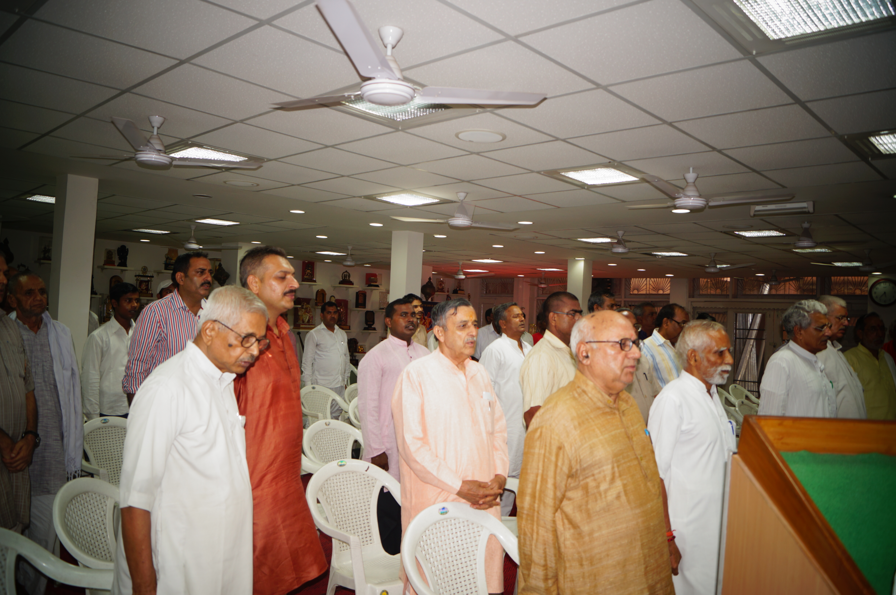

History
Bharatiya Janseva Sansthan came into existence in the year 1986.The orgainisation was
founded by the personalities driven with the spirit of Social accountability, national
development for upliftment of the marginaised in this civilisation of millions year
old.Late Shri Rajeshwar jI,Late.Shri Mohanlal Joshi and some of their equal minded
colleagues gifted with indomitable will gave birth to their brainchild,Bhartiya Janseva
Sansthan.
The visionary founders were always at pains because even after 40 years of independence
the social maladies like ignorance, Superstitions, Untouchability , Poverty , Illiteracy
persisted in Indian society. These negative vibes in their valued observations were
solely responsible for creation of barriers in the path of visible development and
growth of national development despite Government’s sincere efforts towards eradication
of backwardness.

The men who shaped the road map of this organisation were deeply connected to the roots.
They possessed decades of experience of realising the ground realities faced by Indian
society by visiting nooks and corner of the sub continent with a mission of community
development activities.
he founding fathers of the organisation had rationally understood that the
social fabric and national integration are rudimental of Development of any
nation. They opined that both social fabric and national integration were
severely impacted by narrow minded opinion leaders. Identities like caste,
creed, language, region along with religion had a shadow over the national
spirit as well as togetherness of the citizens.
Besides that backwardness of country is also a blessing in disguise for vested
interest groups was undeniable truth for the men behind this noble mission. The
thinkers while visualizing the necessity of such an organisation of self less
mission also very much practically observed that poor, illiterate inhabitants of
hilly and in accessible areas are needed to be brought back into mainstream of
development.
Hence since its inception the Organisation is functioning with pro active
commitment for integral development of underprivileged ones as well as saving
society and culture from decaying.